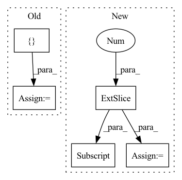

Pattern ID :2956
Before Change
c1 = c[:, 1:] * self.arange
c1 = torch.flip(c1, [1])
h = []
h.append(torch.exp(c0))
for n in range(1, self.impulse_response_length):
idx = -min(n, self.cep_order)
h.append(
torch.einsum(
"bd,bd->b",
torch.stack(h[idx:], 1),
c1[:, idx:],
)
/ n
)
h = torch.stack(h, 1)
return h
After Change
c1 = torch.flip(c1, [1])
h = torch.empty((c.shape[0], self.impulse_response_length), device=c.device)
h[:, 0] = torch.exp(c0)
for n in range(1, self.impulse_response_length):
s = n - self.cep_order
h[:, n] = (
torch.einsum(
"bd,bd->b",
h[:, max(0, s) : n].clone(),In pattern: SUPERPATTERN
Frequency: 3
Non-data size: 5
Instances Fragment ID: 16161756
Project Name: sp-nitech/diffsptk
Commit Name: 95d7da9e29f52cdd75988edd56bb731ee3ec8548
Time: 2022-03-11
Author: takenori.yoshimura24@gmail.com
File Name: diffsptk/c2mpir.py
M Class Name: CepstrumToImpulseResponse
N Class Name: CepstrumToImpulseResponse
M Method Name: forward(2)
N Method Name: forward(2)
M Parent Class: nn.Module
N Parent Class: nn.Module
M File Name: diffsptk/c2mpir.py
N File Name: diffsptk/c2mpir.py
M Start Line: 58
M End Line: 74
N Start Line: 58
N End Line: 73
Before Change
out1 = x
// out2 = torch.exp(-F.interpolate(alpha[:, None], self.in_feat))[:, 0]
out2 = torch.exp(-alpha) * fac1
out = torch.cat([ out1, out2After Change
def forward(self, x, alpha, fac1):
out1 = x
if self.in_feat != self.n_a:
out2 = torch.exp(-F.interpolate(alpha[:, None], self.in_feat))[:, 0] * fac1
else:
out2 = torch.exp(-alpha) * fac1
return self.fc_out(out1 * out2) Fragment ID: 16161754
Project Name: sungbinlim/neuboots
Commit Name: e398255427327fff201f2d2e562bf00bec52783f
Time: 2020-09-28
Author: phelahab@gmail.com
File Name: models/gbsnet.py
M Class Name: GbsCls
N Class Name: GbsCls
M Method Name: forward(4)
N Method Name: forward(4)
M Parent Class: nn.Module
N Parent Class: nn.Module
M File Name: models/gbsnet.py
N File Name: models/gbsnet.py
M Start Line: 32
M End Line: 36
N Start Line: 33
N End Line: 38
Before Change
out = x
out2 = fac1 * torch.exp(-1.0 * alpha)
for i, layer in enumerate(self.fc_layers):
out = layer(torch.cat([ out, out2After Change
def forward(self, x, alpha, fac1):
out = x
out2 = torch.exp(-F.interpolate(alpha[:, None], self.in_feat))[:, 0]
out2 = out2 * fac1 + (1 - fac1)
return self.fc_out(out * out2)
Fragment ID: 16161755
Project Name: sungbinlim/neuboots
Commit Name: d406d3694ab25140dafeb3f2af61335a50011a32
Time: 2020-09-25
Author: phelahab@gmail.com
File Name: models/gbsnet.py
M Class Name: GbsCls
N Class Name: GbsCls
M Method Name: forward(4)
N Method Name: forward(4)
M Parent Class: nn.Module
N Parent Class: nn.Module
M File Name: models/gbsnet.py
N File Name: models/gbsnet.py
M Start Line: 34
M End Line: 38
N Start Line: 32
N End Line: 35